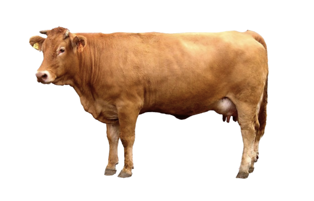

MOXO is a small recently opened multimedia studio focused on creating video games and animated shorts.
Our goal is to emphasize unique artistic visions in the sphere of video game design and interactive art.
The Hidden Wiki is a spartan HTML project that I use for project documentation and personal portfolio
showcase. Feel free to browse my tools, illustration and animation work!
Want to collaborate? Reach out to me via e-mail!
